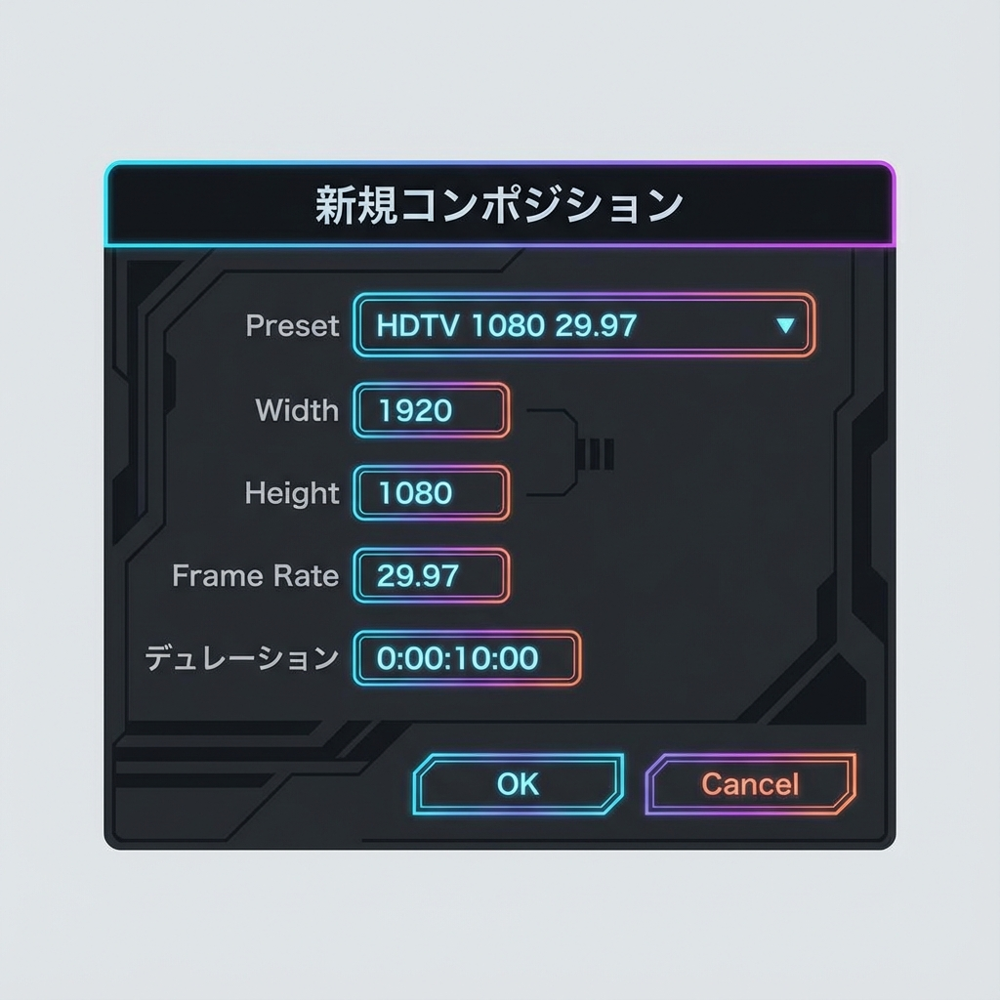
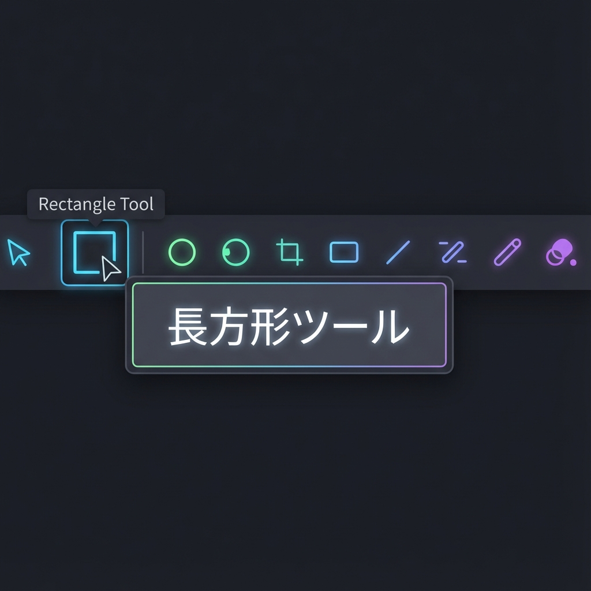
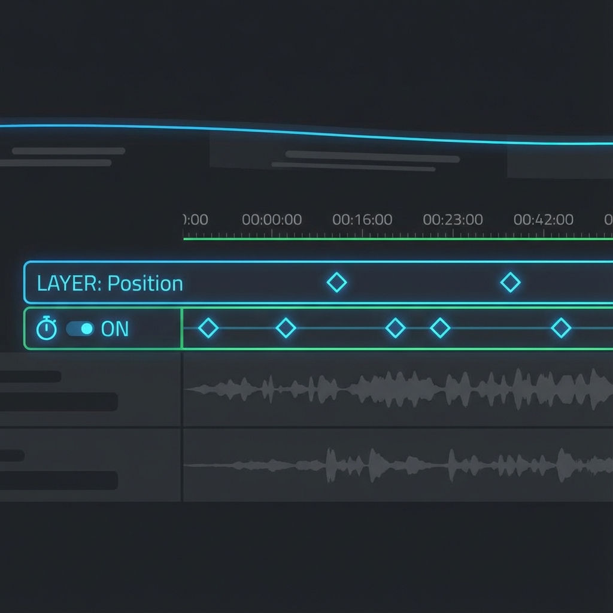
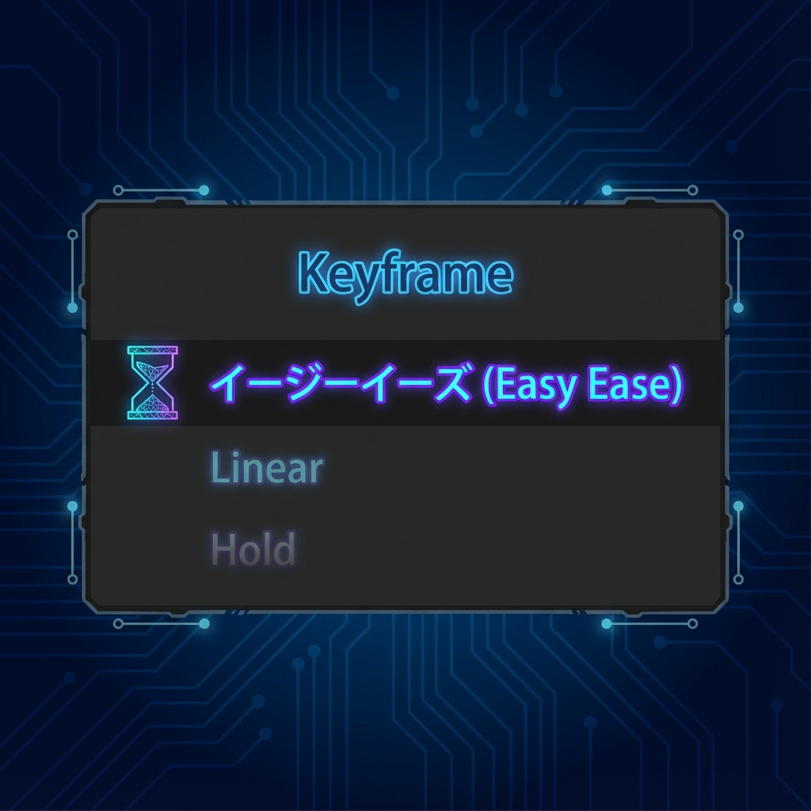

⌨️
今日のショートカット
P 位置 (Position)
S スケール (Scale)
🎯 このミッションのゴール
After Effects（Ae）は「動き」を作るプロフェッショナルなソフトです。 まずは基本の「キーフレーム」を理解して、図形や文字を自由自在に動かせるようになりましょう！
🎬 どんな時に使うの？（利用シーン）
「キーフレームアニメーション」は、こんな場面で必須です！
- CMやVP（ビデオパッケージ）制作
- YouTubeのオープニングロゴアニメーション
- テロップを動かして注目させる
🏁 準備：コンポジションを作る
1新規コンポジション作成
Aeでは「コンポジション」というキャンバスを作って作業します。

- スタート画面の「新規コンポジション」をクリック。
- 以下の設定で作成します：
- コンポジション名：Day2_Practice
- プリセット：HDTV 1080 29.97
- デュレーション（長さ）：0;00;10;00（10秒）
- 背景色：好きな色（黒か白がおすすめ）
- 「OK」をクリックすると、画面が現れます。
2図形を描く

- 上部のツールバーから「長方形ツール」を選びます（ダブルクリックすると画面いっぱいに作成されます）。
- 画面・コンポジションパネル上でドラッグして、好きな大きさの四角形を描きます。
- 色は上部の「塗り」と「線」で変更できます。
✨ キーフレームで動かす
Aeで動きを作るには「キーフレーム（通過点）」を打ちます。「0秒ではここ、3秒ではあそこ」と指定すると、その間を自動で動かしてくれます。
3位置を動かす

ストップウォッチをON
動きの開始合図！
ひし形マーク
これがキーフレームです
- タイムラインパネル（下部）で、作成したシェイプレイヤーの「＞」マークをクリックして展開します。
- 「トランスフォーム」を展開します。
- 「位置」の左にあるストップウォッチアイコン⏱️をクリックします（青くなります）。
→ 現在の時間（0秒）にキーフレームが打たれました。 - 時間を進めます（2秒くらいへ）。
- 画面上の図形を別の場所にドラッグして移動させます。
→ 自動的に2つ目のキーフレームが打たれます。 - スペースキーで再生してみましょう！動きましたか？
4動きに急緩をつける（イージーイーズ）
ロボットのような等速の動きを、人間らしい滑らかな動きに変えます。

- 打ったキーフレーム（ひし形）をドラッグして全て選択します。
- キーボードの F9 を押します（MacでFnキーが必要な場合は Fn + F9）。
- キーフレームの形が「砂時計⏳」に変われば成功！
- 再生してみると、動き出しがゆっくり・止まるときもゆっくりになります。
💡 その他のプロパティ
「位置」以外も同じ方法で動かせます！ショートカットキーで呼び出せます。
⌨️ 必須ショートカット
- P (Position) ... 位置
- S (Scale) ... スケール（大きさ）
- R (Rotation) ... 回転
- T (Transparency) ... 不透明度（※Oじゃないので注意！）
🏁 Mission 1 クリア条件
✅ 図形が画面の中を動いた！
✅ F9で滑らかな動きになった！
😱 困ったときは？ (トラブルシューティング)
キーフレームが打てない！
「位置」などの左にあるストップウォッチアイコン⏱️が青くなっていますか？クリックしてONにしましょう。
動かしたのに軌道が見えない
レイヤーが選択されているか確認しましょう。